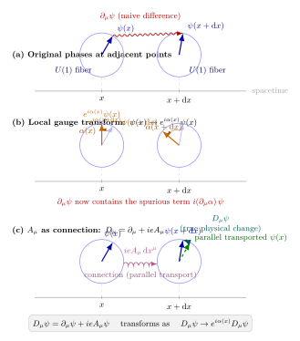

最小耦合 — 规范对称怎么"自动"给出相互作用?
上一节末尾我们写下了 Dirac 场的自由拉氏密度
$$ \mathcal L_{\text{free}} = \bar\psi(x)\,(i\gamma^\mu \partial_\mu - m)\,\psi(x). $$
它描述一个自由的电子-正电子场, 没有任何相互作用. 但现实世界的电子并不孤僻, 它和光子交谈, 以库仑力彼此排斥、以辐射跃迁跳能级、以轫致辐射在 X 光管里嚎叫. 如何把"光子-电子耦合" 写进 $\mathcal L$? 笨办法是手工拼一个项, 比如 $-eA_\mu \bar\psi\gamma^\mu\psi$, 然后说"因为实验是这样的". 但这种做法既丑又不讲道理 —— 为什么偏偏是这一项, 不是 $-eA_\mu A^\mu \bar\psi\psi$? 为什么耦合常数是一个统一的 $e$, 而不是每个电子都不同? 为什么轻子、夸克、W、Z 的耦合都服从类似的规律?
1918 年, Hermann Weyl 尝试把 Einstein 广义相对论中的"局部尺度变换" 提升为一种 gauge (尺度) 不变性, 想由此统一引力和电磁. 那次尝试失败了 —— Einstein 本人立刻指出, 按 Weyl 的设计, 同一只钟带到不同路径后读数会不同, 和实验矛盾. 但 1929 年, 量子力学冒头之后, Weyl 回过头来重新包装这个想法: 不是让尺度局部化, 而是让量子波函数的相位局部化. 这一改, 整个故事就接通了. 今天我们把这整套方案叫做"规范原理", 它给出了粒子物理中所有基本相互作用的唯一一种"自动推出" 方式.
一、从全局到局部: $\partial_\mu$ 在哪一步出了问题?
让我们先看一个明显的对称性. 自由 Dirac 拉氏量在全局 $U(1)$ 变换
$$ \psi(x) \to e^{i\alpha}\,\psi(x), \qquad \bar\psi(x) \to e^{-i\alpha}\,\bar\psi(x) $$
下严格不变, 其中 $\alpha$ 是一个常数. 因为 $\partial_\mu \psi \to e^{i\alpha}\partial_\mu\psi$ (常数不求导就掉出来), 所以 $\bar\psi\,i\gamma^\mu\partial_\mu\psi \to e^{-i\alpha}\cdot e^{i\alpha}\bar\psi\,i\gamma^\mu\partial_\mu\psi = \bar\psi\,i\gamma^\mu\partial_\mu\psi$, 质量项 $\bar\psi\psi$ 同理. 结论: 整体给所有场乘一个相位, 物理不变. 这是平凡的、几乎无信息的 —— 相位的绝对值本来就从来没有意义.
现在升级一下: 允许 $\alpha$ 是时空的函数 $\alpha(x)$, 在每一点给波函数一个独立的相位. 这叫"局部" 或"定域" 规范变换. 为什么要这样做? 有三个层次的理由. 第一, 量子力学告诉我们相位本来就不可观测, 那么要求"每一点的相位都不可观测" 比"只在全宇宙统一取同一个相位" 要自然得多. 第二, 相对论禁止瞬时信息传递, 一个"整宇宙一同转相位" 的操作含有超光速的约定成分, 局部化是拆掉这个约定. 第三, 几何上, 纤维丛 (fiber bundle) 给出的数学对象正是每点一个独立的内部对称空间 —— 所谓 "$U(1)$ 主丛", 而每点的相位旋转就是选取丛中的一个切片.
但让 $\alpha$ 变成 $\alpha(x)$ 的代价是: $\partial_\mu$ 不再"穿" 过相位. 具体算:
$$ \partial_\mu \psi(x) \to \partial_\mu\big[e^{i\alpha(x)}\psi(x)\big] = e^{i\alpha(x)}\,\big[\partial_\mu\psi(x) + i(\partial_\mu\alpha(x))\,\psi(x)\big]. $$
右边多出一项 $i(\partial_\mu\alpha)\psi$. 代回拉氏量, 得
$$ \bar\psi\,i\gamma^\mu\partial_\mu\psi \;\to\; \bar\psi\,i\gamma^\mu\partial_\mu\psi \;-\; \bar\psi\,\gamma^\mu\psi \cdot (\partial_\mu\alpha). $$
多出来的 $-\bar\psi\gamma^\mu\psi\,\partial_\mu\alpha$ 一项不消失, 自由 Dirac 拉氏量在局部 $U(1)$ 变换下不再不变. 这里就是全局到局部的分水岭: $\partial_\mu$ 在局部相位上"漏水", 而物理要求的不变性没法简单满足.
于是我们不得不改造导数. 直觉上我们需要一个"协变导数" $D_\mu$, 让它作用在 $\psi$ 上后, 在变换下依然像 $\psi$ 本身一样, 只乘一个 $e^{i\alpha(x)}$, 不再拖一条尾巴.
二、把协变导数逼出来 (cliché 的严格 deepdive)
这一节我们把"为什么 $D_\mu = \partial_\mu + ieA_\mu$" 这条常被一笔带过的事, 从头推一次.
所求的 $D_\mu$ 应该满足
$$ D_\mu \psi(x) \to e^{i\alpha(x)}\,D_\mu \psi(x) \tag{1} $$
即 $D_\mu\psi$ 在局部变换下和 $\psi$ 一样"协变"地变. 我们先猜一个形式: $D_\mu = \partial_\mu + ieA_\mu(x)$, 其中 $A_\mu$ 是一个四矢量的新场, $e$ 是一个实数常量 (以后会认出它是电荷). $A_\mu$ 的变换规则现在还是未知数, 我们倒推一下它该怎么变.
设 $A_\mu \to A_\mu'$, 则 $D_\mu' = \partial_\mu + ieA_\mu'$. 作用在变换后的波函数上:
$$ D_\mu'\,(e^{i\alpha}\psi) = \partial_\mu(e^{i\alpha}\psi) + ieA_\mu'\,e^{i\alpha}\psi. $$
第一项按上一节展开为 $e^{i\alpha}(\partial_\mu\psi + i(\partial_\mu\alpha)\psi)$. 第二项为 $ie A_\mu' e^{i\alpha}\psi$. 把 $e^{i\alpha}$ 提出来, 得
$$ D_\mu'(e^{i\alpha}\psi) = e^{i\alpha}\,\big[\partial_\mu\psi + i(\partial_\mu\alpha)\psi + ieA_\mu'\,\psi\big]. $$
为让这个等于 $e^{i\alpha}D_\mu\psi = e^{i\alpha}(\partial_\mu\psi + ieA_\mu\psi)$, 比较系数, 要求
$$ i(\partial_\mu\alpha) + ieA_\mu' = ieA_\mu, \quad\Rightarrow\quad A_\mu'(x) = A_\mu(x) - \frac{1}{e}\,\partial_\mu\alpha(x). $$
这就是我们推出来的 (而不是假定的) $A_\mu$ 的变换规律. 注意它和经典电磁学中规范势的变换 $A_\mu \to A_\mu + \partial_\mu \chi$ (其中 $\chi$ 是任意标量) 完全同构 —— 把 $\chi = -\alpha/e$ 一对应就是. 也就是说, 电磁学里那个"电磁势可以加一个梯度而不改变物理" 的古老规范自由, 正是 Dirac 波函数局部相位自由的对偶.
既然 $D_\mu\psi$ 严格协变, 那么 $\bar D_\mu\psi$ (其中 $\bar D_\mu = \partial_\mu - ieA_\mu$ 作用在 $\bar\psi$ 上) 也严格协变, 把 $\partial_\mu$ 替换为 $D_\mu$ 就得到局部规范不变的拉氏量:
$$ \mathcal L_{\text{fermion}} = \bar\psi\,(i\gamma^\mu D_\mu - m)\,\psi. \tag{2} $$
这就是"最小耦合" 原理 (principle of minimal coupling): 把自由场拉氏量里每一个 $\partial_\mu$ 替换成 $D_\mu$, 就可以得到与规范场相互作用的拉氏量, 不用多加任何东西. 把它展开看看:
$$ \mathcal L_{\text{fermion}} = \bar\psi\,i\gamma^\mu\partial_\mu\psi - m\bar\psi\psi - e\,A_\mu\,\bar\psi\gamma^\mu\psi. $$
前两项是上一节的自由 Dirac 拉氏量. 第三项自动冒出来: $-eA_\mu\,j^\mu$, 其中 $j^\mu \equiv \bar\psi\gamma^\mu\psi$ 恰是 Dirac 场的守恒电流. 这就是 QED 的电磁相互作用顶点! 换句话说, 一旦你愿意把 $U(1)$ 对称局部化, "光子-电子耦合" 是免费送的, 你连形式都不用猜 —— 它由 $D_\mu$ 的结构强制.
再看一层几何: $A_\mu$ 是纤维丛上的"联络" (connection), 它的作用是告诉你"在相邻两点之间怎样比较相位". $\partial_\mu\psi$ 所比较的是 $\psi(x+\mathrm dx)$ 和 $\psi(x)$ 之间的差, 但这两个值活在不同点的 "$U(1)$ 纤维" 里, 它们之间的相位对比由规范自由决定. $D_\mu\psi = \partial_\mu\psi + ieA_\mu\psi$ 则是扣除规范约定后的"真实" 变化率. $A_\mu$ 越是"扭" 纤维, $D_\mu$ 和 $\partial_\mu$ 的差别越大 —— 而"扭" 的程度正对应电磁场. 这种观点把电动力学解释为了一个 $U(1)$-主丛上的几何, 和广义相对论中曲率对应于 Christoffel 联络的故事完全平行.

三、加上规范场的动力学: 完整 QED
(2) 式已经告诉我们电子怎么和 $A_\mu$ 耦合. 但 $A_\mu$ 自己还没有动力学 —— 它不会传播, 不会辐射, 更没有光子. 要让 $A_\mu$ 成为一个独立的场, 必须加上它自己的动能项, 并且这项也必须规范不变.
能用的二阶导数量是 $\partial_\mu A_\nu$. 但 $\partial_\mu A_\nu$ 在 $A_\mu \to A_\mu - \partial_\mu\alpha/e$ 下不不变, 会多出一项 $-\partial_\mu\partial_\nu\alpha/e$. 然而, 反对称组合
$$ F_{\mu\nu} \equiv \partial_\mu A_\nu - \partial_\nu A_\mu $$
把多出的那项 $\partial_\mu\partial_\nu\alpha/e$ 和 $\partial_\nu\partial_\mu\alpha/e$ 相减 (偏导数交换) 消掉了, 于是 $F_{\mu\nu}$ 在局部 $U(1)$ 变换下严格不变. 这就是"规范场强" 或"曲率". 它的平方 $F_{\mu\nu}F^{\mu\nu}$ 是洛伦兹标量又是规范不变量, 用来做动能项正合适. 负号和因子 $1/4$ 由约定选取, 使得它化简后正好是 $\tfrac12(E^2 - B^2)$:
$$ \mathcal L_{\text{gauge}} = -\tfrac14 F_{\mu\nu}F^{\mu\nu}. $$
把 (2) 式和 $\mathcal L_{\text{gauge}}$ 加起来:
$$ \mathcal L_{\text{QED}} = \bar\psi\,(i\gamma^\mu D_\mu - m)\,\psi \;-\; \tfrac14 F_{\mu\nu}F^{\mu\nu}. $$
这就是量子电动力学的完整拉氏量, 一行写完, 其中没有一个"可调参数" 是手工塞进来的 —— 电子质量 $m$、电荷 $e$ 是实验输入, 但拉氏量的所有"项" 都由 $U(1)$ 局部规范对称唯一决定. 注意 $A_\mu$ 的质量项 $\tfrac12 m_A^2 A_\mu A^\mu$ 在变换下也不不变 (它变为 $\tfrac12 m_A^2 (A_\mu - \partial_\mu\alpha/e)(A^\mu - \partial^\mu\alpha/e)$, 多出的项无法消掉), 所以光子在这个框架里必然无质量. 实验上光子的质量上限是 $m_\gamma < 10^{-18}\,\mathrm{eV}/c^2$, 对应康普顿波长大于 $10^9\,\mathrm m$, 和"零" 在测量精度内一致 —— 这是规范对称强制要求的一条直接结论. (弱相互作用的 W、Z 有质量, 那里规范对称是被 Higgs 机制"自发" 破缺的, 不是明显破缺, 见第 12 节.)
再把一个极限查一遍: 如果关掉耦合 ($e \to 0$), 那么 $D_\mu \to \partial_\mu$, $\mathcal L_{\text{QED}} \to$ 自由 Dirac + 自由光子, 两者脱耦, 我们退回上一节. 如果关掉规范场 ($A_\mu = 0$), 只剩 $\bar\psi(i\gamma^\mu\partial_\mu-m)\psi$ 和孤独的 $-\tfrac14 F_{\mu\nu}F^{\mu\nu} = 0$, 同样退回. "最小耦合" 这四个字在这里是字面意义上的 —— 除了把 $\partial$ 换成 $D$, 我们什么也没加, 而相互作用全在那个替换里.
四、数字代入、历史与非阿贝尔推广
让我们把耦合常数量化一下. 在 Heaviside-Lorentz 自然单位制 ($\hbar = c = \varepsilon_0 = 1$) 下, 电子电荷
$$ e = \sqrt{4\pi\alpha} \approx \sqrt{4\pi / 137} \approx \sqrt{0.0917} \approx 0.303, $$
其中 $\alpha = e^2 / (4\pi\hbar c)$ 是精细结构常数, 实验值 $\alpha \approx 1/137.036$. 这个 $0.303$ 是每个 QED 顶点贡献的振幅因子, 它的平方 $\alpha \approx 0.0073$ 是每次"光子-电子相互作用" 给截面贡献的权重. 为什么 QED 可以用微扰展开? 正因为这个权重小 —— 二阶过程相对于一阶小 $\alpha \sim 10^{-2}$, 三阶再小 $10^{-2}$, 级数收敛速度极快. 电子反常磁矩的 $g-2$ 算到了 $\alpha^5$ 阶, 理论和实验一致到 $10^{-12}$ 量级, 这是整个物理学最精确的一次对比, 也是 QED 最直接的胜利.
再看另一个数字: 一个非相对论电子被一个 $1\,\mathrm V$ 的电势差加速, 得到 $1\,\mathrm{eV}$ 动能 —— 这正是 $eA^0$ 一项的直接体现. 把 $A^0 = 1\,\mathrm V$ 代入 $-eA_\mu\bar\psi\gamma^\mu\psi$, 在非相对论极限下 ($\bar\psi\gamma^0\psi \to \psi^\dagger\psi$) 得到 $-eA^0 |\psi|^2 = -e\phi|\psi|^2$, 这就是标量电势下电子的势能项. 换句话说, 最小耦合原理在慢速极限下自动退化成量子力学中"加 $e\phi$ 到哈密顿量" 的规定, 反过来印证了 $D_\mu$ 的正确性.
历史上, Weyl 1929 把这套相位局部化的看法重新包装为规范原理, 比 QED 的算符形式化 (Tomonaga-Schwinger-Feynman 1946-48) 早了近 20 年. 它当时被看作一个数学观察, 没引起多大反响, 因为电磁相互作用本来就已经写得好好的, "从相位对称推出 $A_\mu$" 在当时是倒着看的文章. 真正让规范原理站上主流的, 是 1954 年 Yang-Mills 的那篇论文: 他们问一个看似无害的问题 —— 如果把 $U(1)$ 换成非阿贝尔群 $SU(N)$, 会发生什么?
让我们把这个推广写完. 局部变换变成矩阵形式 $\psi \to U(x)\psi$, 其中 $U(x) = \exp[ig\alpha^a(x)T^a]$, $T^a$ 是 $SU(N)$ 的生成元 (对 $SU(2)$ 是 Pauli 矩阵的一半, 对 $SU(3)$ 是 Gell-Mann 矩阵的一半). 协变导数变为
$$ D_\mu = \partial_\mu - ig\,A_\mu^a\,T^a, $$
规范场 $A_\mu^a$ 带一个"颜色" 指标 $a = 1,\ldots,N^2-1$ (对 $SU(3)$ 是 8 个, 对应 8 种胶子). 规范场自己的变换规则比阿贝尔情形复杂得多, 它不但要做"梯度平移" $A_\mu \to A_\mu - \partial_\mu\alpha/g$, 还要在矩阵意义上"被共轭转动" —— 生成元 $T^a$ 之间不对易 $[T^a, T^b] = if^{abc}T^c$, 由此产生一堆非线性项. 这个非线性是决定性的: 它使得场强
$$ F_{\mu\nu}^a = \partial_\mu A_\nu^a - \partial_\nu A_\mu^a + g f^{abc} A_\mu^b A_\nu^c $$
的平方项 $F^a F^a$ 里含有立方和四次项 $A^3, A^4$, 物理上意味着胶子之间能直接互相耦合 (不像光子彼此不直接碰面). 这个自相互作用是 QCD 渐近自由 (第 13 节会讲) 的数学根源, 也是 Yang-Mills 理论丰富程度的来源. 三个标准模型的规范群, $SU(3)_C \times SU(2)_L \times U(1)_Y$, 都通过同一个最小耦合模板给出所有基本相互作用 (强、弱、电), 对应耦合常数分别是强耦合 $g_s \approx 1.2$、弱耦合 $g \approx 0.65$、超荷耦合 $g' \approx 0.36$ (在 $M_Z$ 能标上). 数字量级都是 $\mathcal O(1)$, 但为什么 $U(1)$ 的 $e \approx 0.30$ 最小而 $SU(3)$ 的 $g_s \approx 1.2$ 最大? 这是跑动耦合 (第 18 节) 要回答的.
一点历史注脚: Yang 和 Mills 在 1954 年写出非阿贝尔规范理论时, 是为了把同位旋 ($SU(2)$) 局部化, 当时他们并不知道这套东西最终会用来描述弱相互作用和色相互作用 —— 他们的原始动机里还希望理论里的规范玻色子对应 ρ 介子. 论文发表后, Pauli 在讨论班上当场问: "那这些规范玻色子的质量是多少?" 没人答得出 (因为非阿贝尔规范对称也禁止质量项, 但实验看到的力短程有限程, 要求中间玻色子有质量). 这个"质量悖论" 卡了近十年, 直到 1964 年 Brout-Englert-Higgs 机制把问题绕开, Yang-Mills 才真正上位. 今天回头看, 1954 年那篇论文是 20 世纪下半叶粒子物理最重要的单篇文献之一, 而它的起点恰恰是上一节我们推的那个简单问题 —— 局部化一个内部对称, 逼出一个规范场.
小结
这一节, 我们把"相互作用" 从一个需要手工塞进拉氏量的麻烦东西, 推成了一个规范对称自带的副产品. 方法论上: 要求 $U(1)$ 相位不变性在每一点都独立成立, $\partial_\mu$ 立刻不够用, 必须补上一个带特定变换规则的 $A_\mu$, 由此构造出协变导数 $D_\mu$; 把 $\partial \to D$ 代回自由 Dirac 拉氏量, 电子-光子的耦合项自动冒出来. 推广到非阿贝尔 $SU(N)$ 后, 同一个套路给出了 $W, Z$ 和胶子, 也给出了胶子的自相互作用. 整个标准模型的三个规范相互作用, 就是同一条模板在 $U(1)_Y \times SU(2)_L \times SU(3)_C$ 上三次并行执行的结果. 下一节, 我们会把视角翻个面, 从 Noether 定理的严格推导开始, 看这些局部对称性背后到底藏着怎样的守恒流 —— 最小耦合故事里的 $j^\mu = \bar\psi\gamma^\mu\psi$ 不是随手取的名字, 它正是 Noether 给 $U(1)$ 对称性配的那条电流.
▲